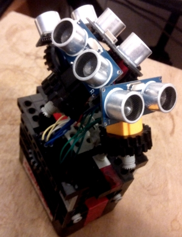
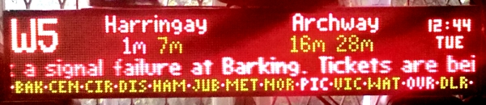
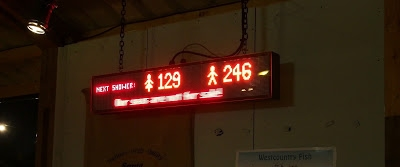
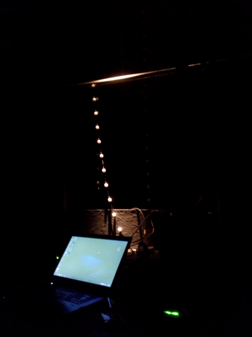
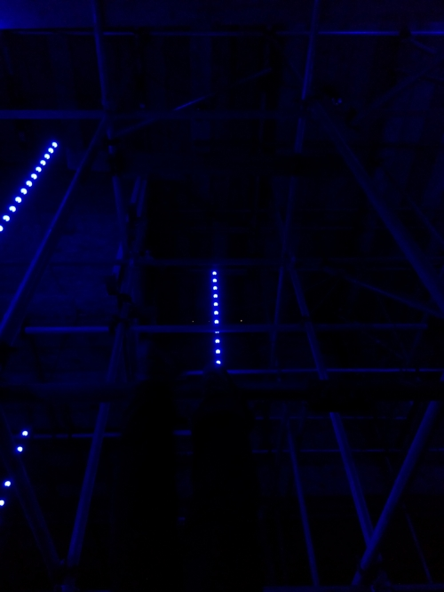
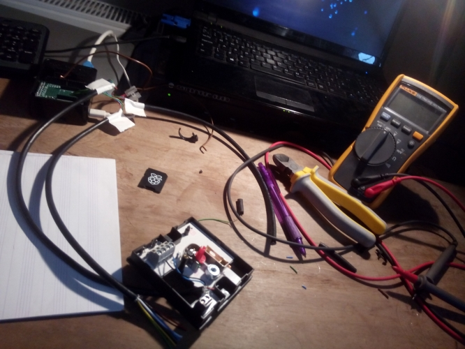

At the end of March 2015 I left Ocado and took a personal sabbatical to focus on other interests. As well as various musical things I have also been involved with some technical projects.
Some of these projects can be found on my GitHub page.
My current project is an ultrasonic 3D MIDI controller. This allows a performer to control a synthesizer or other digital instrument by waving their hand in the air. The device is far from finished, but I'm already using it in my own projects.

This was a project I did with a friend who works with hardware, and was my first serious project using a Raspberry Pi. The original idea was to take a salvaged LED display and make it display local travel information. After much experimentation and 'playing about' we did just that:

We were then asked to re-purpose our creation for use by Greenpeace on their field at the Glastonbury festival:

You can read more about this project here.
I worked with the Greenpeace Lighting Crew at Glastonbury to install the Lightboards, and also produced the audio, wrote the control software and helped with the light programming for an interactive audio-visual feature. I don't yet have the photos or videos of this, but rest assured another blog post will follow once I do.
 
I designed a system to control my central heating system via a tablet. I have written the software and put together some of the hardware, but my 'hardware guy' has moved to Wales so this is on hold for a little while.
